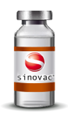

COVID-19 VACCINE
THERE ARE FOUR TYPES OF COVID-19 VACCINES
AVAILABLE TO USE AT THIS CURRENT TIME.
The fight against COVID-19 has seen vaccine development move at record speed, with more than
170 different vaccines in trials. But how are they different from each other and how will they
protect us against the disease?
THE FOUR MAIN TYPES OF COVID-19 VACCINE
There are four categories of vaccines: WHOLE VIRUS, PROTEIN SUBUNIT, VIRAL VECTOR and NUCLEIC ACID (RNA AND DNA).
Some of them try to smuggle the antigen into the body, others use the body’s own cells to make the viral antigen.
TYPES OF VACCINES |
EXPLANATION |
|---|---|
WHOLE VIRUS |
Many conventional vaccines use whole viruses to trigger an immune response. There are two main approaches. Live attenuated vaccines use a weakened form of the virus that can still replicate without causing illness. Inactivated vaccines use viruses whose genetic material has been destroyed so they cannot replicate, but can still trigger an immune response. Both types use well-established technology and pathways for regulatory approval, but live attenuated ones may risk causing disease in people with weak immune systems and often require careful cold storage, making their use more challenging in low-resource countries. |
PROTEIN SUBUNIT |
Subunit vaccines use pieces of the pathogen - often fragments of protein - to trigger an immune response. Doing so minimises the risk of side effects, but it also means the immune response may be weaker. This is why they often require adjuvants, to help boost the immune response. An example of an existing subunit vaccine is the hepatitis B vaccine. |
NUCLEIC ACID |
Nucleic acid vaccines use genetic material – either RNA or DNA – to provide cells with the instructions to make the antigen. In the case of COVID-19, this is usually the viral spike protein. Once this genetic material gets into human cells, it uses our cells' protein factories to make the antigen that will trigger an immune response. The advantages of such vaccines are that they are easy to make, and cheap. Since the antigen is produced inside our own cells and in large quantities, the immune reaction should be strong. A downside, however, is that so far, no DNA or RNA vaccines have been licensed for human use, which may cause more hurdles with regulatory approval. |
VIRAL VECTOR |
Viral vector vaccines also work by giving cells genetic instructions to produce antigens. But they differ from nucleic acid vaccines in that they use a harmless virus, different from the one the vaccine is targeting, to deliver these instructions into the cell. One type of virus that has often been used as a vector is adenovirus, which causes the common cold. As with nucleic acid vaccines, our own cellular machinery is hijacked to produce the antigen from those instructions, in order to trigger an immune response. |
LIST OF VACCINES THAT ARE BEEN USED IN MALAYSIA
According to the World Health Organisation (WHO), there are more than 150 potential vaccines that are currently being developed and tested globally to tackle the ongoing COVID-19 pandemic. Around 372 of these are in human trials and 19 are approved to use worldwide (Last Update 9th April 2021). Malaysia has purchased five varieties of Covid-19 vaccines to be use in the Malaysia's National Covid-19 Immunisation Programme. For now, Malaysia are only using 3 types of vaccines in the Malaysia's National Covid-19 Immunisation Programme that are Pzifer-BioNTech, Sinovac, & AstraZeneca
VACCINES |
TYPES |
|---|---|
 |
The Sinovac vaccine is an inactivated vaccine, which means it uses killed virus particles to trigger the body's immune response to a virus. Suitable for those with weak immune systems, Sinovac's vaccine has an efficacy of 50.4 per cent to 91.25 per cent. |
| The AstraZeneca vaccine is a viral vector vaccine, jointly produced by UK-based pharmaceutical company AstraZeneca and Oxford University. It uses a modified virus to deliver a small portion of the virus' genetic code to the body's cells, teaching them to produce the spike protein found in the coronavirus and build an immune response to it. This vaccine must also be administered in two doses and has an efficacy rate of 62 per cent to 90 per cent. | |
| Pfizer-BioNTech is a messenger RNA or mRNA vaccine which instructs the body's cells to produce a protein that triggers an immune response. A Covid-19 mRNA vaccine teaches our cells to produce a 'spike protein' which is found on the surface of the coronavirus. The body's immune system then recognises this protein and develops an antibody to protect against it. Unlike traditional vaccines, this type contains only synthetic components, not a live virus. Pfizer-BioNTech boasts an efficacy of 95 per cent and must be administered in two doses. |
NUMBERS OF MALAYSIAN PEOPLE REGISTER FOR VACCINATION
72.3%
TOTAL REGISTRATION:17,891,932
(Last Update: 12th of July 2021)
TOTAL OF MALAYSIAN PEOPLE GOT VACCINATED
24.0%
TOTAL OF MALAYSIAN PEOPLE GOT VACCINATED FOR DOSE 1 & 2:11,366,710
(Last Update: 12th of July 2021)
For more info about COVID-19 and vaccination program, contact:
MALAYSIA'S NATIONAL COVID-19 IMMUNISATION PROGRAMME